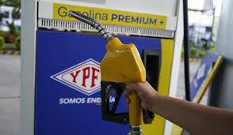
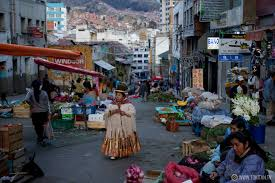
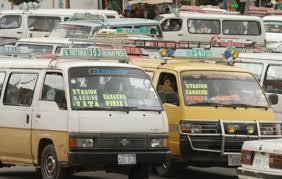

Simulador de Abastecimiento de Carburantes

Simulador de Precios de Alimentos

Simulador de Transporte

Casos de estudio
Casos de estudio
En esta sección se presentan algunos ejemplos de prueba para verificar el funcionamiento de los simuladores.
Caso 1: Carburantes
Este caso representa una estación de servicio que tiene una cantidad limitada de combustible y debe calcular cuántos días podrá abastecer a la población.
Reserva inicial: 10000 litros
Consumo diario: 1200 litros
Reabastecimiento: 300 litros
Resultado esperado: La reserva llegará al nivel crítico aproximadamente en 8 días.
Caso 2: Precios de alimentos
Este caso muestra cómo el aumento de precios afecta el gasto mensual de una familia en productos básicos de la canasta familiar.
Arroz: 8 Bs → 11 Bs
Papa: 7 Bs → 10 Bs
Aceite: 12 Bs → 18 Bs
Resultado esperado: El gasto mensual aumenta debido al incremento de precios.
Caso 3: Transporte
Este caso simula el aumento del costo de transporte cuando existen bloqueos o desvíos en las rutas.
Distancia normal: 10 km
Distancia con desvío: 16 km
Costo por km: 2 Bs
Resultado esperado: El gasto semanal de transporte aumenta debido a la ruta más larga.
Conclusiones
Este proyecto permitió aplicar HTML, CSS y JavaScript para resolver problemas relacionados con la economía familiar.
También se utilizó DOM para mostrar resultados dinámicos en pantalla.